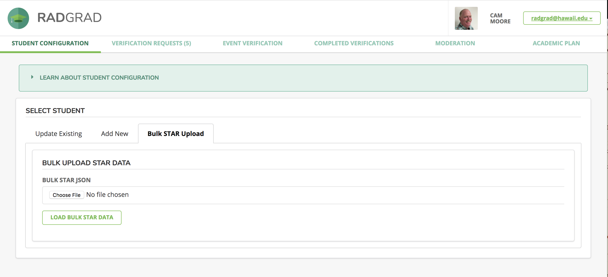

Importing Bulk STAR Data
Each semester, we need to update the RadGrad database with current course data for each student, so that their Competency points accurately reflects the courses that they've taken and the grades they have achieved in them.
To do this, we've developed a script in partnership with the folks at STAR to enable us to download course data given a file containing email addresses for all students of interest.
Installation
After following the instruction to install RadGrad, cd to the radgrad/scripts/ directory and invoke npm:
scripts$ npm install
This will download and install the third-party libraries required to download students' STAR data.
Download STAR data into a json file
Create a text file named emails.txt. This file contains the email addresses, one per line, of the students whose STAR data is needed by RadGrad.
Then invoke node download-bulk-star-json.js You will be asked to enter your UH username, password and the name of the file in which to store the STAR data:
scripts$ node download-bulk-star-json.js
? Enter your UH username: cmoore
? Enter your password: [hidden]
? Enter the file name to save the data to star1.json
Obtaining STAR data for 77 users. Results expected at 1:46 PM (in 13 minutes)
The script estimates that the STAR processor requires about 10 seconds per student, so it prints out an estimated time of arrival before uploading the emails to STAR for processing.
Upload the json file to RadGrad
Login to RadGrad as an Advisor. Go to the Student Configuration page and click on the "Bulk STAR Upload" tab.

Choose the json file containing the downloaded STAR data and press the LOAD BULK STAR DATA button. RadGrad will tell you how many students were updated or created.